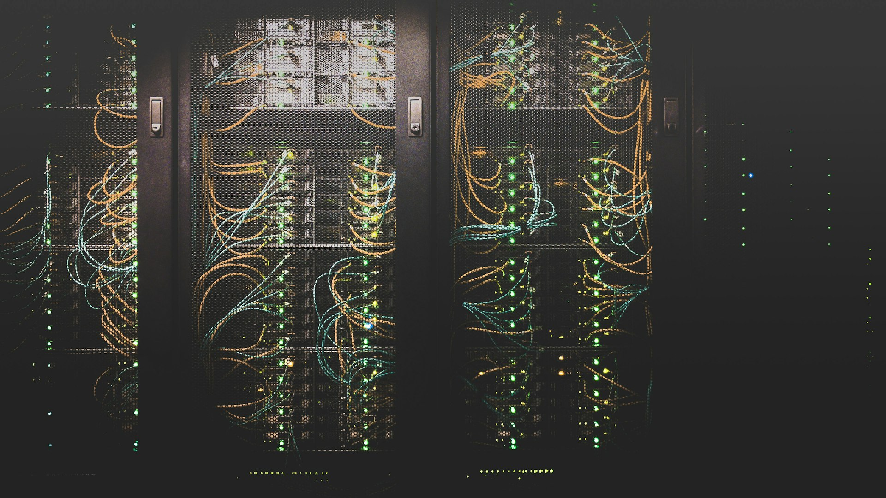
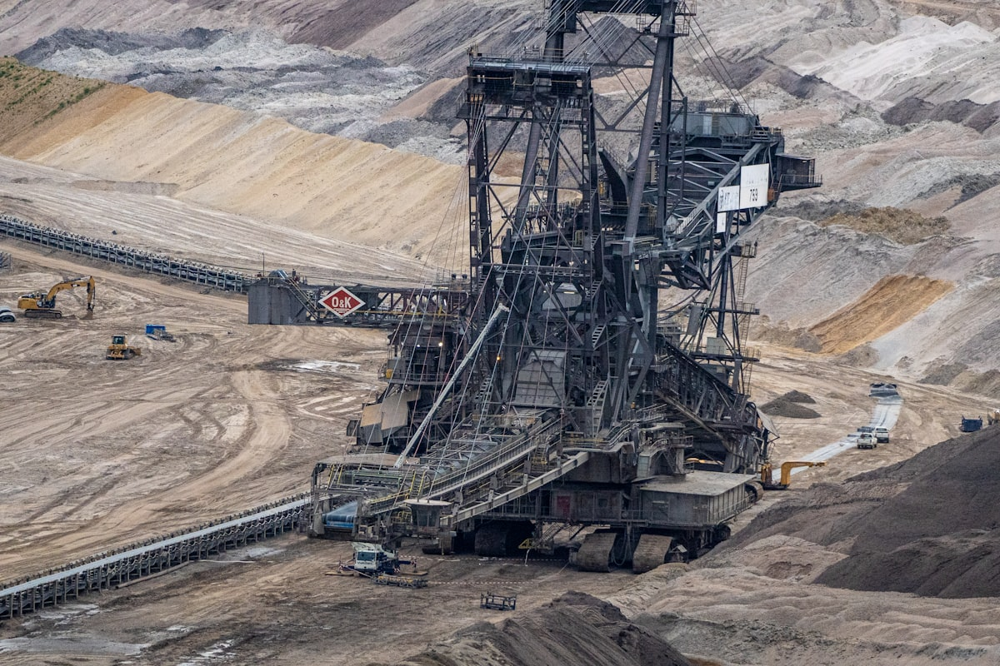
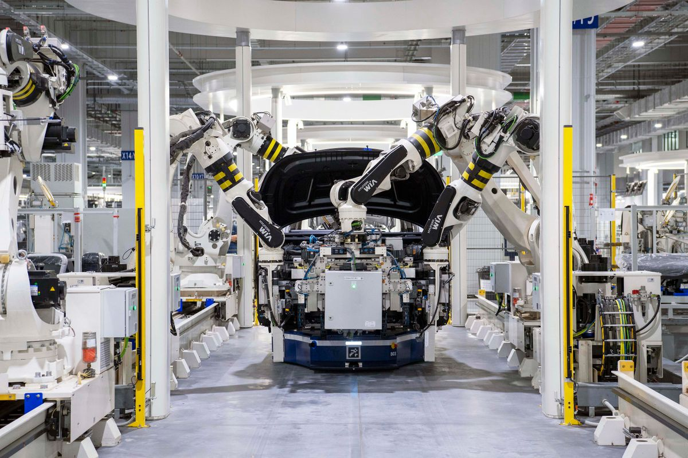

Propuesta estratégica · TransAdvanced · Enterprise 2026
Cuarenta años de ingeniería, un ecosistema Cisco consolidado y casos Enterprise que lo demuestran. Todo eso ya existe. Lo que falta es un sistema que lo ponga delante de las empresas correctas, antes que la competencia.
Durante cuarenta años TransAdvanced creció por reputación. Es el mejor activo posible —y el más difícil de escalar: el boca a boca solo llega hasta donde llega la red de contactos actual.
Revisamos las 29 páginas del sitio, el código, el sitemap y las etiquetas de medición. No es una opinión sobre el diseño: son hallazgos verificables con impacto comercial directo.
Medición de PageSpeed: 48 en mobile y 47 en desktop. El contenido principal tarda 9,3 segundos en aparecer en un celular. Un gerente de IT que llega desde un anuncio no espera diez segundos: se va antes de leer la primera línea. Y esa demora se paga dos veces —en leads perdidos y en un clic más caro.
Los únicos logos del sitio son de proveedores (Cisco, Nokia), no de clientes. Sin testimonios. Para una empresa de 40 años, es el activo más caro que está sin usar.
Solo hay Google Tag Manager. No existe LinkedIn Insight Tag. El canal donde vive el comprador —CIOs, gerentes de IT— no se puede trabajar. Cada visita se pierde.
/ingenieria-que-conecta-copy responde 200, está en el sitemap y se apunta a sí misma como canónica. Una página de prueba canibalizando la home.
Todas las consultas entran por el mismo punto de contacto —incluso "Agendar demo" termina ahí. Un formulario con campos definidos permite saber si hay un proyecto Enterprise detrás antes de que el equipo comercial invierta tiempo, y evita que entre cualquier cosa por el mismo embudo.

La mayoría de las empresas que quieren crecer necesitan primero tener algo que contar. TransAdvanced ya lo tiene.
Casos Enterprise recientes. Proyectos de transformación a escala, ya ejecutados y funcionando, en industrias que son exactamente el objetivo. Es la prueba que un CIO necesita antes de firmar: alguien que ya hizo esto, en su sector, y salió bien.
El respaldo Cisco. En una compra donde el fabricante pesa tanto como el integrador, estar dentro del ecosistema es un multiplicador de credibilidad.
Cuarenta años sin un proyecto fallido conocido. Donde el miedo principal es que la implementación salga mal, la trayectoria no es un dato de color: es el argumento.
Ingeniería propia. La suite T-* es un diferencial que ningún reseller puede replicar. Hoy está enterrada en una subpágina.
Un caso Enterprise reciente tiene fecha de vencimiento comercial.
Contado hoy, con el cliente entusiasmado y las métricas frescas, vale por diez reuniones. Contado dentro de dos años, es una línea en una lista de referencias. La oportunidad no es que los casos existan: es que todavía son noticia.
Una campaña se enciende y se apaga. Un sistema queda funcionando: capta, califica, entrega y aprende. La diferencia entre las dos cosas es la diferencia entre gastar y construir un activo.
Que TransAdvanced aparezca, de forma sostenida, delante de las empresas que ustedes elijan. Que entren al sitio, que encuentren un caso de su industria y que dejen sus datos. De eso respondemos.
Ni un plazo para el primer contrato, ni un retorno garantizado. Eso depende de la negociación, del precio, del competidor y del momento de cada empresa. Quien lo prometa, está adivinando.
Cuántas conversaciones nuevas aparecieron, con qué empresas, en qué industrias y a qué costo. Todo trazable hasta la campaña que lo originó. Si a los doce meses eso no creció, no funcionó.
Esta es la parte más importante de la propuesta: muestra dónde termina Popcorn y dónde empieza TransAdvanced. Si esto no queda claro ahora, falla después.
Si miran el diagrama con atención, van a ver que Popcorn no aparece en las etapas 5 y 7 —justamente las dos donde se factura. No es un descuido: es la definición honesta del acuerdo. Podemos llenar la agenda de reuniones con las empresas correctas. Lo que pase dentro de esa reunión depende del equipo de TransAdvanced. Cualquier agencia que les prometa lo contrario les está vendiendo humo.
Preferimos decirlo ahora y perder el negocio, antes que decirlo en el mes cinco cuando alguien pregunte por qué no se vendió nada.
Un director de IT de una minera y uno de un banco tienen problemas, presupuestos y miedos distintos. Cada vertical necesita su propio argumento, su landing y su caso. Se activan de a tres por vez, no diez a la vez.



Las prioridad 1 no son las industrias más grandes: son donde TransAdvanced tiene algo que el resto no. Oil & Gas y Minería por Starlink: conectividad donde no llega la fibra, con presupuesto real y poca competencia especializada.
Trabajamos con hospitales, laboratorios y centros médicos. Sabemos cómo decide un director médico y cómo compra un hospital. Ahí no aportamos solo pauta: aportamos criterio.
Son las industrias donde los grandes integradores están más atrincherados y donde el proceso de compra es más pesado y más largo. No es imposible: es el peor lugar para abrir una puerta fría. Se dejan para cuando el sistema ya tenga rodaje.
No hay paquete cerrado. Se puede arrancar por lo estratégico y sumar el resto cuando el sistema esté listo para recibir demanda.
La dirección del sistema. Es el módulo que hace que todo lo demás tenga sentido: define a quién le hablamos, con qué argumento, cómo se mide y qué se ajusta cada mes. Sin esto, los otros módulos son ejecución sin rumbo.
El motor que pone a TransAdvanced delante de las cuentas objetivo. Cada canal con un trabajo distinto: LinkedIn crea demanda donde no existe, Google captura la que ya se activó, el remarketing recupera al que se fue.
El canal que sostiene la relación durante el silencio comercial. En ciclos de 6 a 18 meses, el prospecto que no compra hoy compra en catorce meses —si sigue ahí.
El lugar donde aterriza la demanda. El sitio explica; una landing convierte. Una por vertical, con el caso de esa industria, el dolor específico y dos conversiones: agendar para el que está listo, descargar para el que investiga.
Las piezas que la pauta necesita para salir, diseñadas y editadas para cada canal. Cada creatividad se produce una vez y se adapta a los formatos de Google, LinkedIn y Meta: la campaña nunca sale con material genérico.
La tentación siempre es arrancar por la etapa 3 —encender campañas y ver qué pasa. Es exactamente lo que falla: encender pauta contra un sitio que no captura es tirar plata con método.
Inmersión con el equipo comercial y técnico, buyer personas, benchmark, verticales, cuentas objetivo y mensajes. La etapa que las agencias anteriores probablemente saltearon.
Los quick wins técnicos primero (Insight Tag, página duplicada, velocidad). Después landings, primeros casos desarrollados y materiales comerciales.
Recién acá se enciende el motor. Con investigación hecha y activos listos, la pauta trabaja sobre terreno preparado: Google, LinkedIn, remarketing y email.
Donde el sistema rinde de verdad. Análisis de ganadas y perdidas, rotación de verticales, testing, escalar lo que funciona y apagar lo que no.
Si encendemos campañas en el mes 1, gastamos el presupuesto aprendiendo lo que la investigación nos hubiera dicho gratis.
Entendemos la ansiedad: hay un caso caliente y ganas de capitalizarlo ya. Por eso los quick wins se resuelven en días y empiezan a acumular audiencia de remarketing desde la primera semana, mientras se construye lo demás. Pero la pauta seria arranca cuando hay dónde convertir.
Un sistema de demanda no se juzga igual en el mes uno que en el doce. Definirlo ahora evita la conversación incómoda del mes cuatro.
| Indicador | Qué mide | Responsable | Exigible desde |
|---|---|---|---|
| Reuniones agendadas | El KPI principal. La única métrica que el equipo comercial reconoce como real. | Popcorn genera · TA acepta | Mes 3 |
| Leads calificados | Contactos que cumplen el perfil Enterprise acordado. Filtra el ruido. | Popcorn | Mes 2 |
| Costo por reunión | Cuánto cuesta poner al equipo frente a una empresa objetivo. Más honesto que el CPL. | Popcorn | Mes 4 |
| Cobertura de cuentas objetivo | Qué porcentaje de la lista nominal ya conoce a TransAdvanced. | Popcorn | Mes 3 |
| Nuevas industrias con pipeline | El objetivo de fondo: dejar de depender de una sola vertical. | Conjunto | Mes 6 |
| Pipeline generado | Valor de las oportunidades originadas por el sistema. El número de la dirección. | TransAdvanced | Mes 6 |
| Ventas cerradas | Se reporta y se analiza, pero no es un KPI de Popcorn: depende de la negociación, el precio y el timing. | TransAdvanced | Se informa |
Se está construyendo. Pedir resultados comerciales acá es como pedirle facturación a una obra en cimientos. Lo que sí se exige es ritmo de entrega.
Aparecen los primeros leads calificados y reuniones. Los números van a ser volátiles: es normal. Acá se aprende qué industria responde.
Pipeline consistente, costo por reunión estable, industrias nuevas activas. Si a los doce meses no genera oportunidades de forma predecible, no funcionó.
La propuesta se separa en dos. Una base que TransAdvanced necesita sí o sí —trabaje con quien trabaje la generación de demanda— y el motor de generación de demanda, que se puede activar y testear por separado. Seleccioná lo que quieras y el presupuesto se actualiza solo.
La estrategia, el contenido y los activos que hacen falta para crecer, trabajen con quien trabajen la generación de demanda. Si mañana esa parte la hiciera otra agencia, esto sigue siendo necesario —y nosotros les damos las piezas que esa agencia necesite.
El motor que captura demanda existente y llena el CRM de leads calificados. Es la parte que se puede probar: si a los 3 meses no llega al promedio comprometido, se da de baja sin penalidad (ver escenarios de inversión).
Valores en pesos, no incluyen IVA. La inversión en medios (pauta) se abona aparte, directamente a las plataformas.
Plazo recomendado: 12 meses · Cuentas, datos y activos quedan a nombre de TransAdvanced
Estos números no son una promesa. Al no haber histórico de campañas, son proyecciones construidas sobre los benchmarks de las propias plataformas. Sirven para dimensionar el esfuerzo y decidir por dónde empezar —los valores reales de TransAdvanced los vamos a conocer recién con las primeras semanas de datos.
Los montos de abajo son la inversión en las plataformas, que TransAdvanced abona directamente. No incluyen impuestos ni el fee de Popcorn.
La distribución entre plataformas no es fija: migramos inversión de un canal a otro según performance y resultados. Lo que rinde, escala; lo que no, se corta.
| Plataforma | Objetivo de campaña | Clics | CPC | Conv. | Costo/conv. | Leads |
|---|---|---|---|---|---|---|
| Google Ads | Captación de demanda Search | 900 | USD 3,20 | 6% | USD 53 | 54 |
| Demanda sobre cuentas objetivo | 260 | USD 8,50 | 3% | USD 283 | 8 | |
| Meta | Remarketing + reconocimiento | 650 | USD 1,10 | 4% | USD 27 | 26 |
| Total | Mix de canales | 1.810 | USD 4,27 | 4% | USD 121 | 88 |
| Plataforma | Objetivo de campaña | Clics | CPC | Conv. | Costo/conv. | Leads |
|---|---|---|---|---|---|---|
| Google Ads | Search alta intención | 2.150 | USD 3,30 | 6,5% | USD 51 | 140 |
| ABM + awareness de decisores | 780 | USD 8,80 | 3% | USD 293 | 23 | |
| Meta | Remarketing multicanal | 1.850 | USD 1,20 | 4,5% | USD 27 | 83 |
| Total | Mix de canales | 4.780 | USD 4,43 | 4,67% | USD 124 | 246 |
| Plataforma | Objetivo de campaña | Clics | CPC | Conv. | Costo/conv. | Leads |
|---|---|---|---|---|---|---|
| Google Ads | Search + Demand Gen | 4.850 | USD 3,40 | 6,5% | USD 52 | 315 |
| ABM masivo sobre cuentas objetivo | 1.650 | USD 9,00 | 3% | USD 281 | 53 | |
| Meta | Remarketing + nutrición | 3.900 | USD 1,20 | 4,8% | USD 25 | 187 |
| Total | Mix de canales | 10.400 | USD 4,53 | 4,83% | USD 119 | 555 |
A diferencia de un paquete cerrado de reuniones, este sistema aprende: cada mes sabe más y rinde más. Por eso el compromiso es un promedio hacia el mes 3, no un número fijo desde el día uno.
Ejemplo sobre el Escenario A (~6 reuniones promedio). Se evalúa el acumulado al mes 3, no el resultado del primer mes.
Si a los tres meses no alcanzamos el promedio de reuniones comprometido, das de baja el servicio de generación de demanda sin penalidad. Testeanos sin ataduras.
No entregamos solo la reunión: todos los leads del mes entran a tu CRM. Un contacto no calificado hoy puede cerrar en 3 a 12 meses, y esa base de datos queda para TransAdvanced.
Cuanto más aprende el sistema, más reuniones calificadas genera. El rendimiento no es un techo fijo: crece mes a mes con el aprendizaje acumulado.
Las proyecciones corresponden al volumen esperado de conversiones de marketing —formularios, solicitudes de contacto y demos. Popcorn genera y entrega los leads calificados al CRM; la precalificación final y la reunión las ejecuta el equipo de TransAdvanced. Por eso el trabajo conjunto entre Marketing y Comercial es determinante para convertir esos contactos en reuniones y proyectos de alto valor.
La capacidad técnica está. La reputación está. El caso está. Falta el sistema que lo ponga delante de las empresas correctas —antes que la competencia.